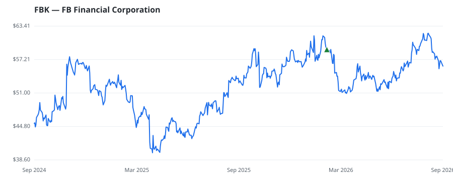

bullish · bearish · n/a — dots: price>SMA10 · SMA10>SMA50 · SMA50>SMA200 · up>down volume (20d)
Banks · mid cap
Members who bought FBK earned a dollar-weighted -5.1% from their disclosure dates, versus +12.3% for the S&P 500 over the same holding windows (-17.4% alpha).

▲ green = a disclosed purchase · ▼ red = a disclosed sale (plotted on disclosure date)
FB Financial Corp is a bank holding company. The company through its wholly-owned bank subsidiary provides commercial and consumer banking services to clients in select markets in Tennessee, North Alabama, and North Georgia. The company segment includes Banking and Mortgage. It generates majority of revenue from the Banking segment which provides a full range of deposit and lending products and services to corporate, commercial, and consumer customers. The Mortgage segment includes the servicing of residential mortgage loans and the packaging and securitization of loans to governmental agencie STATE COMMERCIAL BANKS · website
| Revenue | $833.9M | Net income | $122.6M |
|---|---|---|---|
| Operating income | $138.5M | Diluted EPS | $2.45 |
| Assets | $16.3B | Equity | $1.9B |
| Member | Chamber | Out-performer | Disclosed buys $ | Return on buys |
|---|---|---|---|---|
| Gilbert Cisneros | house | — | $16K | -5.1% |
Disclosed $ figures are bracket midpoints — filings report ranges (e.g. $1,001–$15,000), not exact amounts.